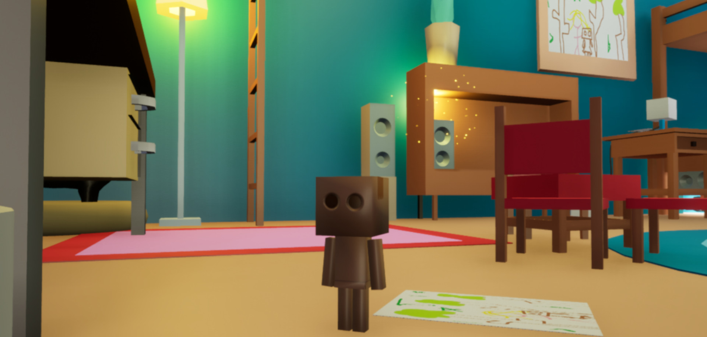
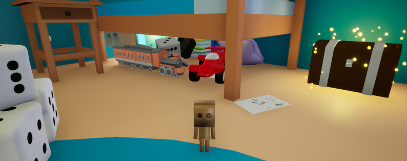
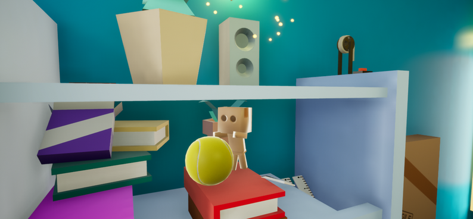

Cutout
A Game Jam puzzle game
Game Overview
Cutout is a 3D puzzle game made for the GMTK Game Jam 2024. Play as a small cardboard character trying to exit their owner's bedroom to find them. Find cardboard shards scattered all around the map to grow taller and taller and access the door.
- Explore a gigantic room full of puzzles and traps
- Find a way to get all the shards to become tall enough to leave the room
- Uncover the presence that bends the rules of the room - a being hidden in plain sight, holding a piece you might need



My role and reflection
What I did
I developed many of the puzzle mechanics, the shard progression system, and modeled most of the assets of the game.
- I developed mechanics for the movement-related puzzles (cat, mouse, roomba), designed to pressure the player compared to classic reflection puzzles
- I implemented the shard progression system, making it modify the size of the player while allowing them to change it freely to go back to puzzles they had missed
- I created most of the 3D assets of the game using Blender, trying to keep up with the (sometimes extravagant) ideas of the team with the little knowledge I had
Challenges and lessons
The central challenge was making height feel meaningful to both the puzzles and the story, which was done by making the majority of the puzzles only accessible at certain sizes, forcing the player to pause and reflect on how to solve it.
During this Game Jam, I learned to link progression directly to the environment so each new shard changes how the player reads the room.
The game is available for free on Itch.io
Download on Itch.io